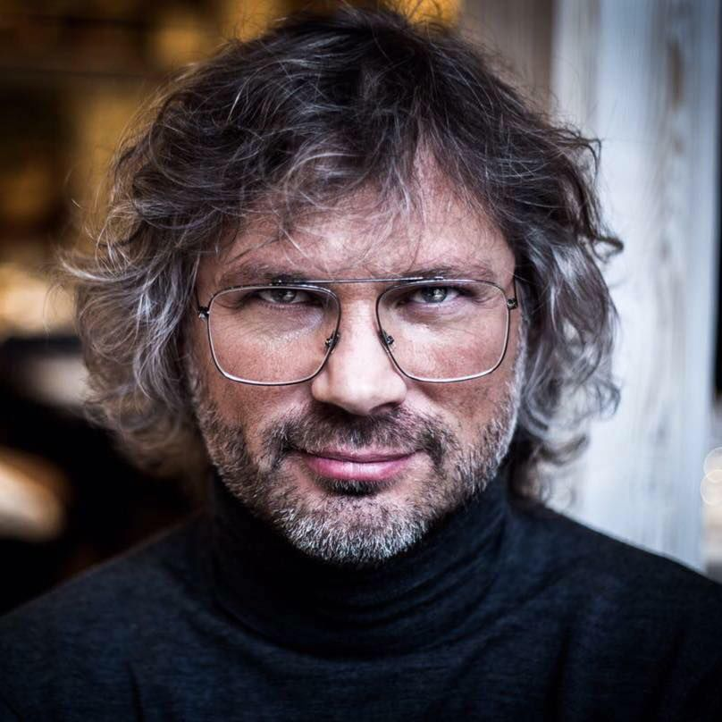

Personalități marcante
Shmuel Cohen (Samuil Kogan), autorul muzicii imnului național al Israelului
Autorul muzicii imnului național al Israelului(1870 – 1940). Născut la Ungheni. La vârsta de 8 ani, familia sa emigrează în Palestina, în noua așezare evreiască Rishon Letzion, în prezent oraș în Israel. În 1888, Shmuel Cohen a potrivit textul poeziei lui Nahtali Herz Imber, ”Hatikva” (”Speranța”), pe o melodie populară, pe care o cunoștea din copilărie, aceasta fiind de proveniență românească. Cântecul respectiv a devenit imnul Statului Israel după 1948.
Lidia Hlib (nume complet Elisabeta Lidia Hlib), scriitoare pentru copii
Scriitoare membră a Uniunii Scriitorilor din Moldova. Debutul literar l-a avut în anul 1967, când a publicat în revista ”Moldova” miniatura pentru copii ”Micuța”. Are publicate 10 volume de povestiri pentru copii, printre care: ”Stăpâna lunilor de vară”, ”Regina nopții”,” Zâna celor micuți”, ”Floarea cu mii de petale”, ”Surpriza lui Moș Crăciun”.
Ilie Cojocaru, artist plastic
Membru al Uniunii Artiștilor Plastici din Moldova. Membru fondator al Grupului Zece. Are lucrări în colecții publice și private din Republica Moldova și de peste hotare. A expus în România, Federația Rusă, Germania, Spania, Ucraina, SUA, Cehia. Distincții: Premiul Ministerului Culturii din România (1999), Premiul Uniunii Artișțtilor Plastici din Moldova (2002), Premiul Ministerului Culturii din Moldova, ”Mihai Grecu” (2014).
Victor Cobzac, artist plastic
Membru al Uniunii Artiștilor Plastici din Moldova, al Asociatiei Internationale a Plasticienilor. Autor de ilustraţii la 30 de cărţi, autor a peste 180 de poezii, publicate în volumul de versuri ”Design poetic”. Conferenţiar la Universitatea Tehnică din Republica Moldova, profesor de desen, pictură şi compoziţie la Liceul Republican de Arte Plastice ”Igor Vieru” din Chişinău.
Valeriu Curtu, caricaturist, pictor scenograf
Caricaturist, pictor scenograf(n. 24 aprilie 1956).Are peste 100 de premii, medalii şi diplome la concursuri internaționale de caricatură, 20 dintre ele fiind pentru locul I. Din 2010, organizează Concursul Internaţional de Caricatură de la Berlin. Lucrările lui au fost achiziţionate de Galeria Tretiakov din Moscova (Rusia), Muzeul de Caricatură din Basel (Elveţia), Muzeul de Caricatură din Vianden (Luxemburg), Muzeul Naţional de Artă al Moldovei, Muzeul din Kioto (Japonia).
Ion Zderciuc, sculptor
În 1988-1991, a fost baterist în formaţia ”Legenda” din Chișinău, apoi în formaţia ”Modest”, pe atunci ”Stupeni”, o legendă a rock-ului din Federația Rusă. De 30 de ani e stabilit în Germania, unde e profesor de percuție. În anul 2004, a stabilit 9 (nouă) recorduri Guiness la instrumentele de percuţie, efectuînd câte 15 bătăi la tobe într-o secundă, în diferite stiluri.
Peza Boutnari (Petru Butnaru), baterist, deținător a 9 recorduri Guiness
Autorul muzicii imnului național al Israelului(1870 – 1940). Născut la Ungheni. La vârsta de 8 ani, familia sa emigrează în Palestina, în noua așezare evreiască Rishon Letzion, în prezent oraș în Israel. În 1888, Shmuel Cohen a potrivit textul poeziei lui Nahtali Herz Imber, ”Hatikva” (”Speranța”), pe o melodie populară, pe care o cunoștea din copilărie, aceasta fiind de proveniență românească. Cântecul respectiv a devenit imnul Statului Israel după 1948.
Veaceslav Bodolica, interpret de muzică pop
Membru al trupei ”Premier Ministr” din Federația Rusă, extrem de populară în anii 1998-2006, Veaceslav Bodolica fiind și autorul majorității pieselor interpretate de formație.S-a produs ca actor în patru pelicule cinematografice, cel mai faimos fiind serialul ” Моя прекрасная няня” (Dădaca mea minunată). Scrie piese pentru vedetele estradei din Rusia.
Petru Moiseev, baterist
Este unul dintre cei mai apreciați și solicitați percuționiști din Republica Moldova. Primul proiect muzical la care participă este formația de jazz-rock ”X-Band” din Ungheni, lider al căreia era interpretul Vali Boghean, cu care a avut ulterior numeroase colaborări; apoi cu Marcel Ștefăneț în proiectul Transbalkanica, cu Formația ”Tharmis”, cu ”Alex Calancea Band”, cu interpreta Geta Burlacu. Profesor la Academia de Muzică, Teatru și Arte Plastice.
Alexandru Plăcintă

Alexandru Plăcintă s-a născut pe 7 mai 1951 în satul Semeni, raionul Ungheni. După absolvirea Universității de Stat din Moldova, a îmbinat munca pedagogică cu studierea picturii și desenului artistic. Este autorul cărților: ”Dragostea și bunătatea schimbă lumea”, ”Răsunet neîntrerupt”, ”Soarele ne e prieten”, ”În brațele universului” ș.a. Este pictor și multe din cărțile sale sunt ilustrate de autor. Autorul antologiei este redactor-șef pentru Republica Moldova al portalului Literatură pentru Copii.